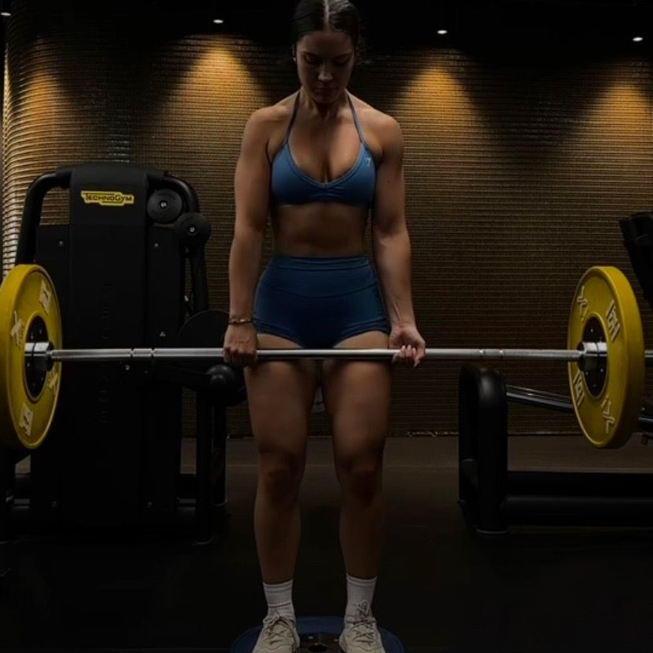

| ---DEPORTE--- | |
| ||Entrenamiento con pesas|| | |
El deporte que realizo es el entrenamiento con pesas, entreno 5 días a la semana. Tengo más de un año en esto y ha cambiado mucho en mí, mi forma de pesar, mi físico y mi salud, me encanta practicarlo y hacerlo parte de mí. |
Ubicación del gimnasio en que inicié y al que sigo asistiendo. |
|  | |
| Más información sobre este deporte. | |
| .... | |